Crecemos
Que son las ODS?
Son conjunto de 17 metas globales establecidos por las naciones unidas en 2015,como parte de la agenda 2030.Su proposito es abordar desafios mundial como la pobreza , el cambio climatico , la desigualdad , la educacion y el acceso al agua , entre otros.
Las 17 ODS
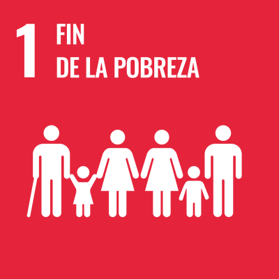
Fin de la Pobreza
Poner fin a la pobreza en todas sus formas en todo el mundo
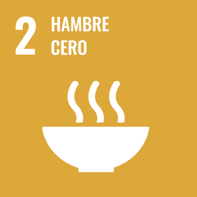
Lucha contra el Hambre
Poner fin al hambre, lograr la seguridad alimentaria y la mejora de la nutrición y promover la agricultura sostenible
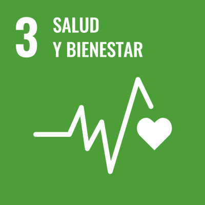
Buena Salud
Garantizar una vida sana y promover el bienestar para todos en todas las edades

Educacion de Calidad
Garantizar una educación inclusiva, equitativa y de calidad y promover oportunidades de aprendizaje durante toda la vida para todos

Igualdad de Genero
Lograr la igualdad entre los géneros y empoderar a todas las mujeres y las niñas
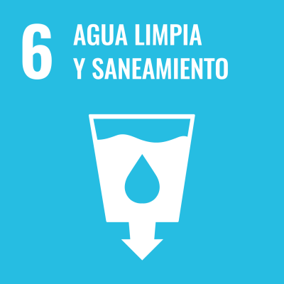
Agua potable y Saneamiento
Garantizar la disponibilidad de agua y su gestión sostenible y el saneamiento para todos
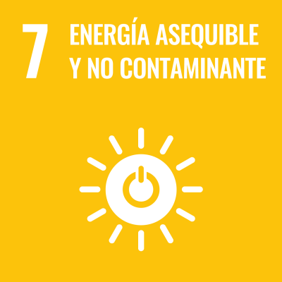
Energías renovables
Garantizar el acceso a una energía asequible, segura, sostenible y moderna para todos
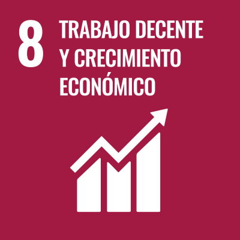
Empleo digno y Crecimiento Económico
Promover el crecimiento económico sostenido, inclusivo y sostenible, el empleo pleno y productivo y el trabajo decente para todos
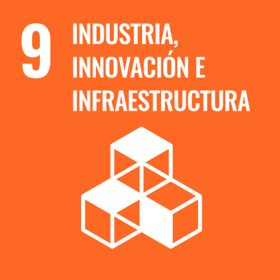
Innovación e Infraestructuras
Construir infraestructuras resilientes, promover la industrialización inclusiva y sostenible y fomentar la innovación

Reducción de la desigualdad
Reducir la desigualdad en y entre los países
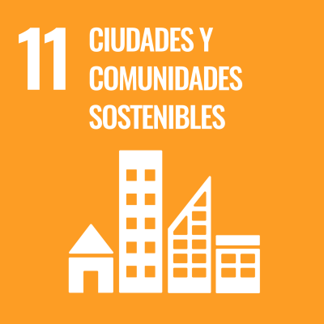
Ciudades y Comunidades sostenibles
Lograr que las ciudades y los asentamientos humanos sean inclusivos, seguros, resilientes y sostenibles
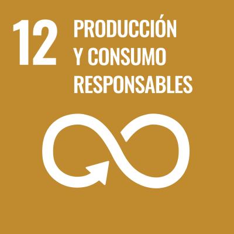
Consumo responsable
Garantizar modalidades de consumo y producción sostenibles
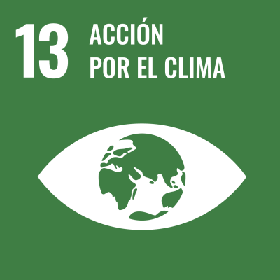
Lucha contra el cambio climático
Adoptar medidas urgentes para combatir el cambio climático y sus efectos
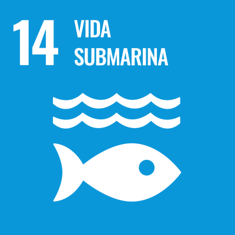
Flora y Fauna Acuáticas
Conservar y utilizar en forma sostenible los océanos, los mares y los recursos marinos para el desarrollo sostenible
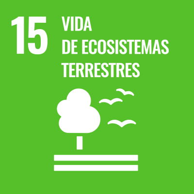
Flora y Fauna terrestre
Gestionar sosteniblemente los bosques, luchar contra la desertificación, detener e invertir la degradación de las tierras y detener la pérdida de biodiversidad
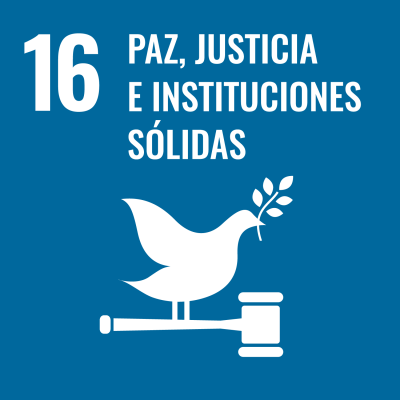
Paz y Justicia
Promover sociedades justas, pacíficas e inclusivas

Alianzas para el logro de los objetivos
Revitalizar la Alianza Mundial para el Desarrollo Sostenible
Historia
los objetivos de Desarrollo Sostenible(ODS) surgieron como una continuacion de los objetivos de Desarrollo de milenos(ODM) , que fueron establecidos en el año 2000 para abordar poblemas globales , pero que finalizaban en el 2015.Al ver los avanzes , pero tambien las limitaciones de los ODM en la onu decidio crear una agenda mas ambiciosa y con un enfoque mas integral , En 2015 tras amplias consultas con gobiernos , organizaciones y ciudadonos se aprobaron los 17 ODS dentro de la agenda 2030.Estos objetivos amplian el alcance de los ODM incomporando areas claves como la sostenibilidad ambiental , la lucha contra el cambio climaico la promocion de la paz y justicia con el fin de lograr un desarrollo mas equilibrado y sostenible en todo el mundo
Importacia
Son relevantes para todos los paises y personas porque abordan problemas universales que afectan a la humanidad en su conjunto. No solo estan destinados a paises en desarrollo , sino que reconocen que incluso las naciones mas ricas enfrentan desafios en areas como la desigualdad , el cambio climatico y el consumo insostenible